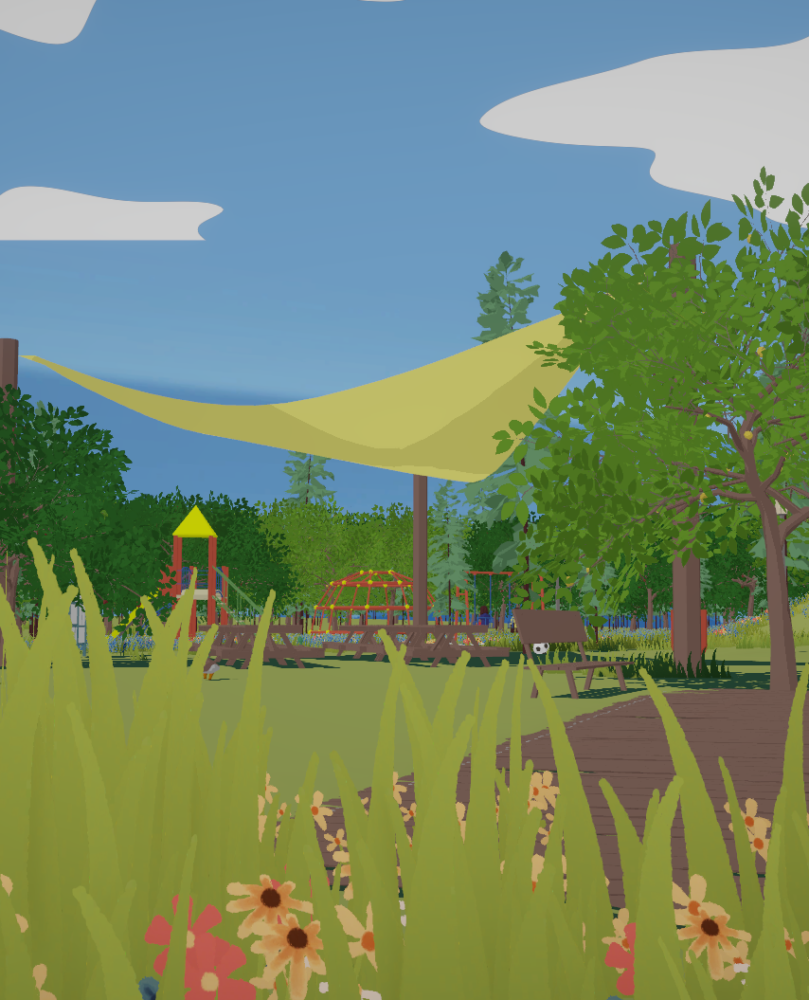
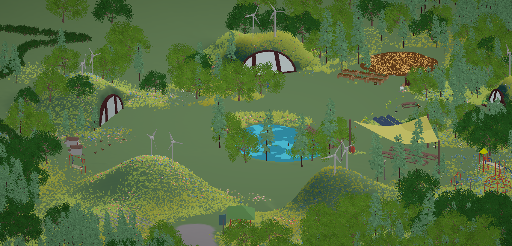
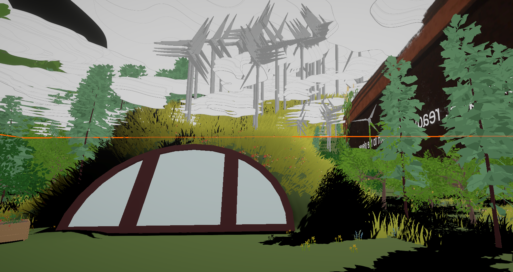
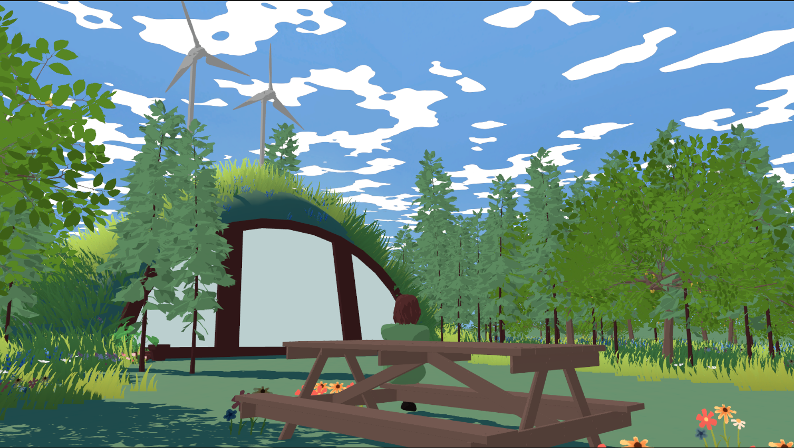
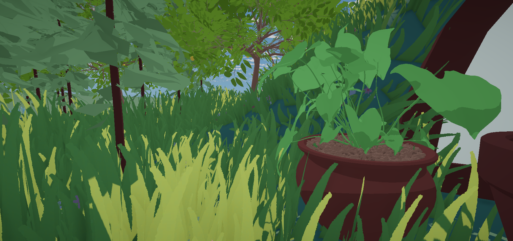

Play as Maude, a kid living in a solarpunk future, as you help your neighborhood prepare for your Aunty Jam’s birthday party. Discover all the elements of a solarpunk world through the low-stakes and joyful practices of interacting with your neighbors, helping with tasks, and exploring your environment. Aunty Jam’s Birthday Cake is a relaxed look at the importance of communities sharing workloads, centering ecological resilience, and celebrating together.
Honourable mention for the Zero Day Games: Solarpunk Jam
Made by game making duo Gertrude Bungalow (Audrey Lewis and Mary Tallontire)




